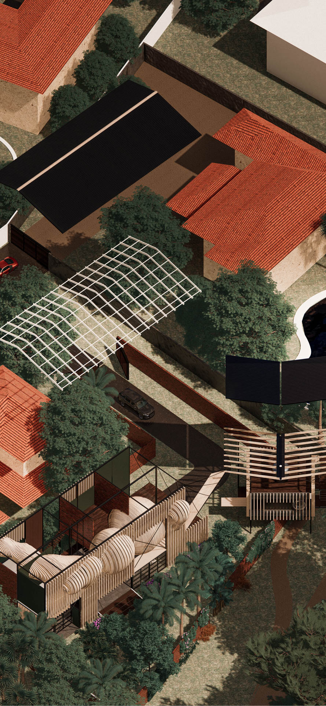
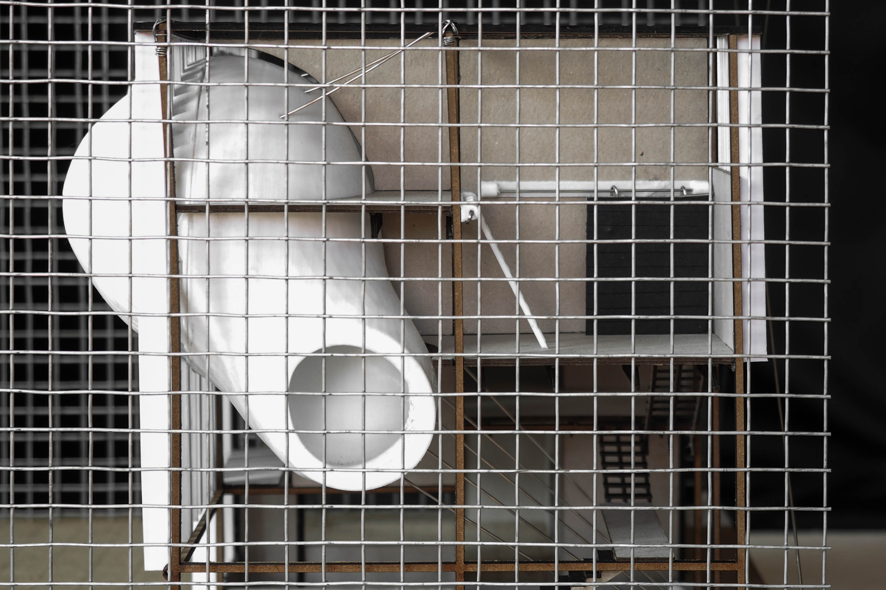

The presence of wildlife transgressing into our lived spaces is a source of consternation for many. At a superficial level, wildlife is dirty because of prevailing notions that they are vectors of harmful zoonotic diseases. If we were to accept Mary Douglas’ definition that dirt is “essentially disorder”, wildlife is also dirt on a psychological level. It is unpredictable and does not conform to our ideals of home and living.
As part of my design research on dirt, I studied the form and behaviour of the lesser-short nosed fruit bat, one of the most populous (and misunderstood) species in Singapore. This project is anchored around a utopian modernist typology of the Eames house. I query how double-height ceiling spaces and radically flat facades, often neglected for want of dramatization, could be adapted to accommodate some of the characteristics unique to the bat. Rather than rely on cracks and faults to bring bats and humans closer, I experiment with imposing an organic metaball mesh over the super-regular Eamsian grid, creating a batshit crazy house.
Understanding Bats
Bats as a form of wildlife dirt are interesting protagonists to study because they are so diametrically opposed to humans. Humans walk on the ground while bats fly. We walk upright while bats roost upside down.
Bats are nocturnal while humans, diurnal. As part of my design research on dirt, I studied the form and behaviour of the lesser-short nosed fruit bat, one of the most populous species in Singapore.
Bats are nocturnal while humans, diurnal. As part of my design research on dirt, I studied the form and behaviour of the lesser-short nosed fruit bat, one of the most populous species in Singapore.

A Modernist Icon: Eames House
A key aspect of the pedagogical approach of this studio is to study a modernist house, and use that as a base where we might begin to design our irreverent double.The Eames house is one of roughly two dozen case studies designed to showcase salient modernist ideals in post-war california.
The Eames banished the poche in architecture, emphasizing a radical flatness that could be achieved with the lightness and thinness of steel construction. A key strategy employed was to vary the size and compositions of the panels on the facade and they did so by experimenting across different materials, textures, colors, porosities and opacities.
The Eames banished the poche in architecture, emphasizing a radical flatness that could be achieved with the lightness and thinness of steel construction. A key strategy employed was to vary the size and compositions of the panels on the facade and they did so by experimenting across different materials, textures, colors, porosities and opacities.

Like the Eames house, I wanted my double to serve as a manifesto of sorts. The house would exhibit its intention boldly, to embrace living with bats and dispel the notion of wildlife in urban spaces as dirt.
The radical flatness of the Eames facade would not be inviting to bats. It had neither the requisite volume nor bat-friendly grippable surfaces. To design for bats, I would have to deepen the facade.
I first experimented with bisected fins spaced narrowly apart to recreate landing conditions hospitable to the bats. The form did not bridge seamlessly into the interior and I eventually replaced the design language in favour of a series of metaspheres.
The radical flatness of the Eames facade would not be inviting to bats. It had neither the requisite volume nor bat-friendly grippable surfaces. To design for bats, I would have to deepen the facade.
I first experimented with bisected fins spaced narrowly apart to recreate landing conditions hospitable to the bats. The form did not bridge seamlessly into the interior and I eventually replaced the design language in favour of a series of metaspheres.
Metaspheres
These spheres of varying radii are meshed together to create a continuous organic form extending the facade deep into the interior. Back on the exterior surface, the organic forms are re-rationalized back blending in with vertical louvres to mediate the harshness of light entering into the interior.
The exterior surface of the metaspheres begins to replace wall, ceiling surfaces, floor and furniture within the interior living spaces.The relative smoothness of the geometry acts as a natural deterrent to bats from occupying areas of dedicated human use.
The exterior surface of the metaspheres begins to replace wall, ceiling surfaces, floor and furniture within the interior living spaces.The relative smoothness of the geometry acts as a natural deterrent to bats from occupying areas of dedicated human use.
Inside the Sphere
The interior of these metaspheres are important roost spaces for the bats. Sliced and assembled as contour plates, they extend deep into the interior of the spheres providing grip surfaces and narrow roost spaces. From the mass, some incisions are made in the plates to allow free passage for the bats.
The interior of the spheres also serves as the space where prime interaction between bats and humans happen. At certain locations along its base, openings have been made for humans to enter and collect the bat guano droppings (point to section). Bat guano dries hard and pellet-like, it does not really stain. Here the curvilinear geometry in the interior of the volume helps direct the guano down to the floor area for easy extraction.
The interior of the spheres also serves as the space where prime interaction between bats and humans happen. At certain locations along its base, openings have been made for humans to enter and collect the bat guano droppings (point to section). Bat guano dries hard and pellet-like, it does not really stain. Here the curvilinear geometry in the interior of the volume helps direct the guano down to the floor area for easy extraction.
Bat Guano Fertilizer Workshop
A drawbridge type platform similarly folds out from the south elevation of the main volume connecting it to the secondary workshop volume. Bat guano makes for a highly effective fertilizer requiring just bat droppings and water to make. A butterfly roof design here captures rainwater in storage tanks which is then mixed and deposited in a fertilizer barrel. This barrel pipes down to the ground floor facing the railway corridor. In this rest spot carved out under the workshop volume and boundary wall, the public is encouraged to tap into the system, collecting fertilizer to aid their own green fingers.


